NATIONAL BANK OF
KYRGYZ REPUBLIC
| Currency | 08.06.2025 | 09.06.2025 |
|---|---|---|
 USD USD |
87,4500 | 87,4500 |
| EUR | 99,6799 | 99,8285 |
| 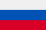 RUB | 1,1105 | 1,1029 |
| KZT | 0,1708 | 0,1714 |
| CNY | 12,1655 | 12,1777 |
Inflation rate in Kyrgyzstan by months of 2025:
JANUARY 2025: 6.7%
FEBRUARY 2025: 7.0%
MARCH 2025: 6.9%
APRIL 2025: 7.1%
MAY 2025: 7.7%
Kyrgyzstan Standard Coins
| Image | Denomination | Material | Diameter (mm) |
Thickness (mm) |
Weight (g) |
Herd | Date | ||
|---|---|---|---|---|---|---|---|---|---|
| Obverse | Reverse | minting | introductions | ||||||
| 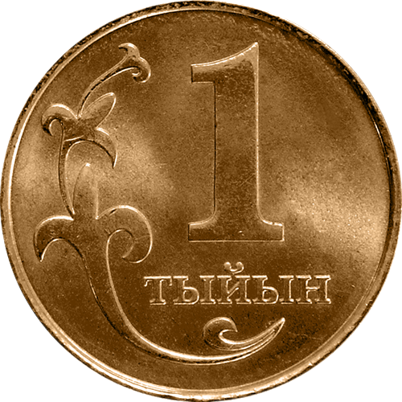 | 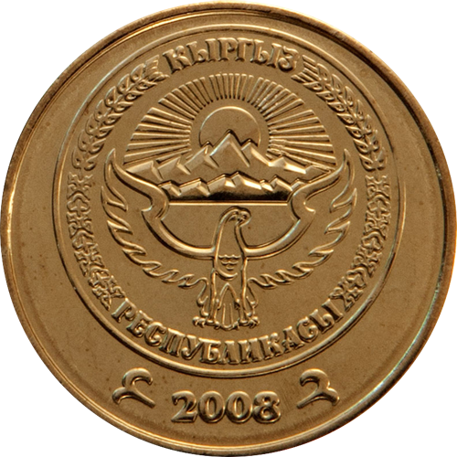 | 1 tyiyn | brass | 14 | 0,95 | 1,0 | ribbed | 2008 | January 1, 2008 |
| 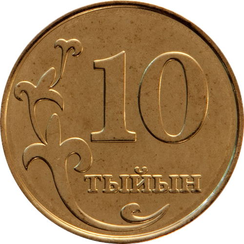 | 10 tyiyn | steel , plastic brass | 15 | 1,15 | 1,3 | smooth | |||
| 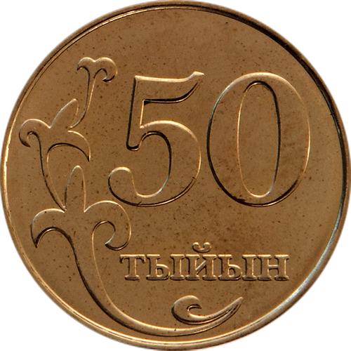 | 50 tyiyn | 17 | 1,22 | 1,8 | |||||
| 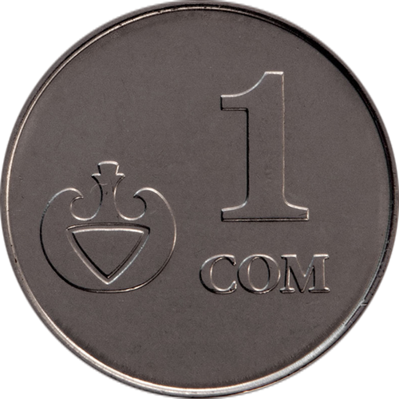 |  |
1 som | steel, nickel plated | 19 | 1,36 | 2,5 | ribbed | ||
| 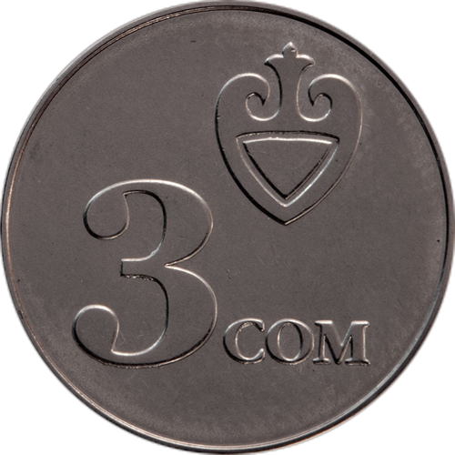 | 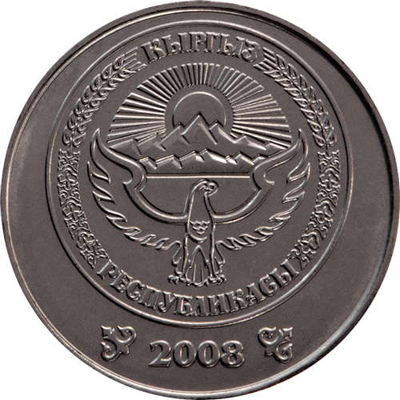 | 3 soms | 21 | 1,4 | 3,2 | ||||
| 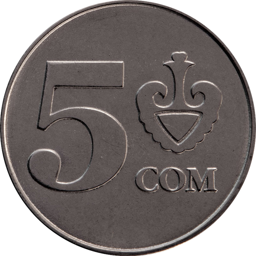 | 5 soms | 23 | 1,55 | 4,2 | |||||
| 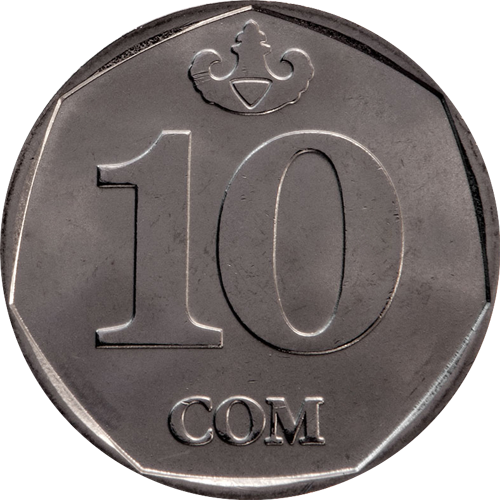 | 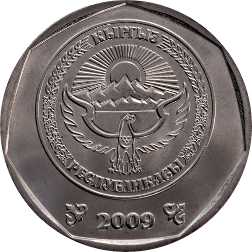 | 10 soms | 24,5 | 1,65 | 5,4 | interrupted-ribbed | 2009 | December 1, 2009 | |
| intermittent-ribbed with the inscription "ON SOM - 10 SOM" |
2009 (2014) | September 1, 2014 | |||||||
Gallery of banknotes of Kyrgyzstan (since the 90s)
1 kopeck (May 10, 1993)
Main color is red. On the front side of the banknote, the numeral "1" is shown in the corners. In the center — a golden eagle against sun rays in an ornamental circle with the inscription "Kyrgyz Republic" and the denomination "Bir tiyin". Along the edges of the circle — microtext. In the lower right corner — the series and number of the banknote. On the reverse side, the denomination "1" is also shown in the corners. In the center — national symbols (sun, tunduk) in a circle with the inscription "Kyrgyz Republic" and the denomination "Bir tiyin", as well as microtext along the edges.
10 kopecks (May 10, 1993)
Main color is green. On the front side of the banknote, the numeral "1" is shown in the corners. In the center — a golden eagle against sun rays in an ornamental circle with the inscription "Kyrgyz Republic" and the denomination "Bir tiyin". Along the edges of the circle — microtext. In the lower right corner — the series and number of the banknote. On the reverse side, the denomination "1" is also shown in the corners. In the center — national symbols (sun, tunduk) in a circle with the inscription "Kyrgyz Republic" and the denomination "Bir tiyin", as well as microtext along the edges.
50 kopecks (May 10, 1993)
Main color is blue. On the front side of the banknote, the numeral "1" is shown in the corners. In the center — a golden eagle against sun rays in an ornamental circle with the inscription "Kyrgyz Republic" and the denomination "Bir tiyin". Along the edges of the circle — microtext. In the lower right corner — the series and number of the banknote. On the reverse side, the denomination "1" is also shown in the corners. In the center — national symbols (sun, tunduk) in a circle with the inscription "Kyrgyz Republic" and the denomination "Bir tiyin", as well as microtext along the edges.
1 som (May 10, 1993)
On the front side of the banknote, the text "KYRGYZSTAN BANKY" is at the top, and the digit with the inscription "1 SOM". In the center on the left are a see-through register and a national ornament; on the right — an image of the monument to the hero of the Manas epic. At the bottom is the digit "1", the text "BIR SOM", and the banknote's series and number printed in black ink. The series consists of one digit and two letters, the number — eight digits. On the white coupon field is the signature of the Chairman of the NBKR. On the reverse side, the digit with the inscription "1 SOM" and the text "KYRGYZSTAN BANKY" are at the top. In the center — the Manas Mausoleum (14th century). Along the edge of the horizontal ornamental strip is the microtext "KYRGYZSTAN BANKY". A see-through register is in the top right. At the bottom — the text "BIR SOM 1".
5 som (May 10, 1993)
On the front side of the banknote, the text "KYRGYZSTAN BANKY" is at the top, and the digit with the inscription "5 SOM". In the center on the left are a see-through register and a national ornament; on the right — an image of the monument to the hero of the Manas epic. At the bottom is the digit "5", the text "BESH SOM", and the banknote's series and number printed in black ink. The series consists of one digit and two letters, the number — eight digits. On the white coupon field is the signature of the Chairman of the NBKR. On the reverse side, the digit with the inscription "5 SOM" and the text "KYRGYZSTAN BANKY" are at the top. In the center — the Manas Mausoleum (14th century). Along the edge of the horizontal ornamental strip is the microtext "KYRGYZSTAN BANKY". A see-through register is in the top right. At the bottom — the text "BESH SOM 5".
20 som (May 10, 1993)
On the front side of the banknote, the text "KYRGYZSTAN BANKY" is at the top, and the digit with the inscription "20 SOM". In the center on the left are a see-through register and a national ornament; on the right — an image of the monument to the hero of the Manas epic. At the bottom is the digit "20", the text "ZHYIYRMA SOM", and the banknote's series and number printed in black ink. The series consists of one digit and two letters, the number — eight digits. On the white coupon field is the signature of the Chairman of the NBKR. On the reverse side, the digit with the inscription "20 SOM" and the text "KYRGYZSTAN BANKY" are at the top. In the center — the Manas Mausoleum (14th century). Along the edge of the horizontal ornamental strip is the microtext "KYRGYZSTAN BANKY". A see-through register is in the top right. At the bottom — the text "ZHYIYRMA SOM 20".
1 som (April 11, 1994)
On the front side — composer Abdylas Maldybaev (1906–1978). On the reverse side — the musical instruments komuz and kyl kiyak against the background of the National Philharmonic building.
5 som (April 11, 1994)
On the front side — ballerina Bübüsara Beishenalieva (1926–1973). On the reverse side — the building of the National Opera and Ballet Theater.
10 som (January 28, 1994)
On the front side — scholar and cultural figure Kasym Tynystanov (1901–1938). On the reverse side — the mountain ranges of Kyrgyzstan and the Jeti-Ögüz gorge.
20 som (April 11, 1994)
On the front side — poet and akyn Togolok Moldo (1860–1942). On the reverse side — the Manas Mausoleum.

50 som (August 29, 1994)
On the front side — ruler of the Alai Kyrgyz, Kurmanjan Datka (1811–1907). On the reverse side — Uzgen Architectural Complex (mosque and mausoleum of the Karakhanids).
100 som (March 20, 1995)
On the front side — folk akyn of Kyrgyzstan Toktogul Satylganov (1864–1933). On the reverse side — the dam of the Toktogul Hydroelectric Power Plant.
1 som (February 7, 2000)
On the front side — composer Abdylas Maldybaev (1906–1978). On the reverse side — musical instruments komuz and kyl kiyak against the background of the National Philharmonic building.
5 som (December 17, 1997)
On the front side — ballerina Bübüsara Beishenalieva (1926–1973). On the reverse side — the building of the National Opera and Ballet Theater.
10 som (December 17, 1997)
On the front side — scholar and cultural figure Kasym Tynystanov (1901–1938). On the reverse side — the mountain ranges of Kyrgyzstan and the Jeti-Ögüz gorge.
20 som (August 15, 2002)
On the front side — poet and akyn Togolok Moldo (1860–1942). On the reverse side — the Manas Mausoleum.
50 som (August 15, 2002)
On the front side — ruler of the Alai Kyrgyz, Kurmanjan Datka (1811–1907). On the reverse side — Uzgen Architectural Complex (mosque and mausoleum of the Karakhanids).
 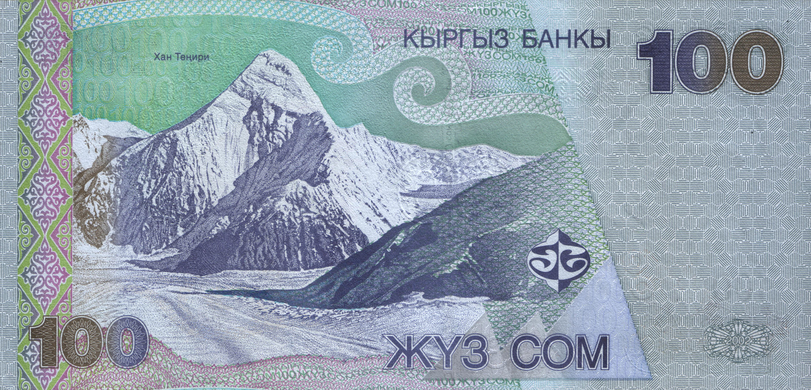
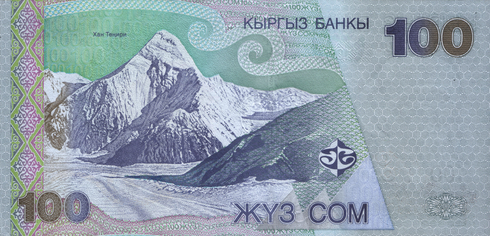
100 som (August 15, 2002)
On the front side — folk akyn of Kyrgyzstan Toktogul Satylganov (1864–1933). On the reverse side — Khan Tengri Mountain.
200 som (August 28, 2000)
On the front side — poet and playwright Alykul Osmonov (1915–1950). On the reverse side — Lake Issyk-Kul and an excerpt from Osmonov’s poem “Zhenishbek.”
500 som (August 28, 2000)
On the front side — poet and *manaschi* Sayakbai Karalaev (1894–1971). On the reverse side — Karalaev performing *Manas*, with images from the epic in the background.
1000 som (August 28, 2000)
On the front side — writer Yusuf Balasaguni (11th century). On the reverse side — Takhti Sulaiman Mosque with Sulaiman-Too Mountain in the background, and an inscription in Kyrgyz: “Ошко үч миң жыл” — “Osh is three thousand years old.”
20 som (July 1, 2009)
On the front side — komuz; poet and akyn Togolok Moldo (1860–1942). On the reverse side — mountain ranges of Kyrgyzstan and the architectural monument Tash-Rabat.
50 som (July 1, 2009)
On the front side — ruler of the Alai Kyrgyz, Kurmanjan Datka (1811–1907), minaret of the Uzgen Architectural Complex. On the reverse side — Uzgen Architectural Complex (mosque and mausoleum of the Karakhanids).
100 som (July 1, 2009)
On the front side — folk akyn of Kyrgyzstan Toktogul Satylganov (1864–1933). On the reverse side — Toktogul hydroelectric power station dam.
200 som (December 1, 2010)
On the front side — poet and playwright Alykul Osmonov (1915–1950). On the reverse side — Lake Issyk-Kul and a fragment from Osmonov’s poem “Zhenishbek.”


500 som (December 1, 2010)
On the front side — poet and *manaschi* Sayakbai Karalaev (1894–1971). On the reverse side — Manas Mausoleum.
1000 som (December 1, 2010)
On the front side — writer Yusuf Balasaguni (11th century). On the reverse side — Takhti Sulaiman Mosque with Sulaiman-Too Mountain in the background.
5000 som (March 2, 2009)
On the front side — Kyrgyz Soviet actor Suimenkul Chokmorov (1939–1992). On the reverse side — Ala-Too Cinema (Bishkek), Kyrgyz mountain range.
2000 som (March 2, 2009)
On the front side — monument to Manas the Magnanimous in Bishkek, yurt. On the reverse side — Tree of Life cinema, landscape with a golden eagle against Khan Tengri and Lake Issyk-Kul.
20 som (February 14, 2024)
On the front side — poet and akyn Togolok Moldo (1860–1942). On the reverse side — mountain ranges of Kyrgyzstan, architectural monument Tash-Rabat.
50 som (February 14, 2024)
On the front side — ruler of the Alai Kyrgyz Kurmanjan Datka (1811–1907). On the reverse side — Uzgen Architectural Complex (mosque and mausoleum of the Karakhanids).
100 som (February 14, 2024)
On the front side — national akyn of Kyrgyzstan Toktogul Satylganov (1864–1933). On the reverse side — Tash-Kumyr hydroelectric power plant dam.

200 som (May 10, 2023)
On the front side — poet and playwright Alykul Osmonov (1915–1950). On the reverse side — Lake Issyk-Kul with mountain peaks in the background.
500 som (May 10, 2023)
On the front side — poet and *manaschi* Sayakbai Karalaev (1894–1971). On the reverse side — Manas Mausoleum.

1000 som (May 10, 2023)
On the front side — writer Yusuf Balasaguni (11th century). On the reverse side — Takhti Sulaiman Mosque with Sulaiman-Too Mountain in the background.
5000 som (May 10, 2024)
On the front side — Kyrgyz Soviet actor Suimenkul Chokmorov (1939–1992). On the reverse side — Ala-Too Cinema (Bishkek), Kyrgyz mountain range.